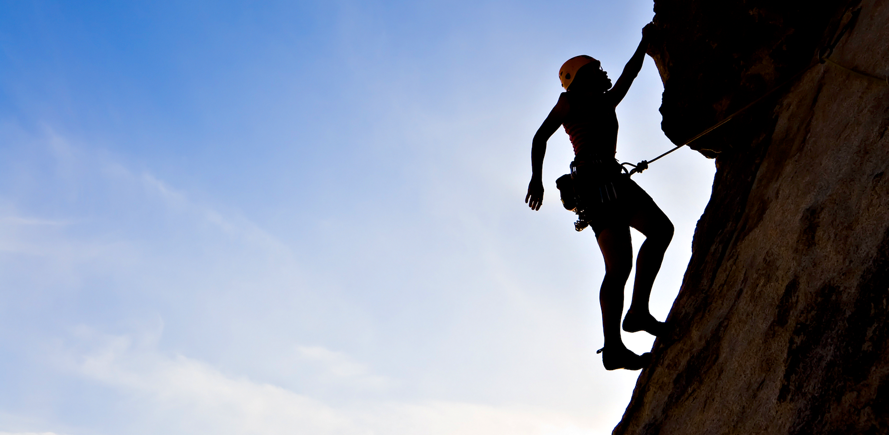
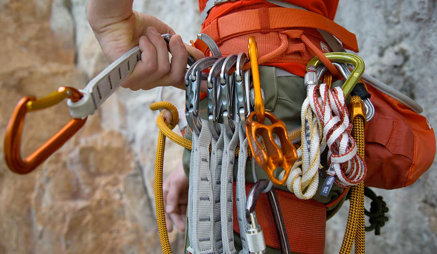

Climbing: Reach New Heights
Rock climbing improves strength, flexibility, and endurance by engaging multiple muscle groups. It enhances balance, coordination, and mental focus while providing a full-body workout.
Key Physical and Mental Benefits of Climbing
1
Improves upper body strength and core stability as you pull yourself up and navigate complex routes.
2
Boosts mental focus and problem-solving skills by requiring strategic thinking for each movement.
3
Enhances flexibility and mobility, as climbers must stretch and twist into different positions to reach holds.
4
Increases cardiovascular endurance through continuous movement and pacing on vertical surfaces.
5
Builds resilience and confidence, as climbers often overcome fear and frustration in pursuit of new heights.
Why Climbing is the Ultimate Full-Body Workout
Climbing challenges every muscle group and demands mental sharpness, making it one of the most complete workouts available.
Whether you're scaling mountains outdoors or navigating a bouldering gym indoors, climbing offers a unique blend of physical challenge and mental engagement. It promotes strength, endurance, and mental clarity while connecting you to nature or fellow climbers.
Climbing Gear: Suit Up for Adventure
Before you hit the wall or the rock, it’s essential to have the right gear. Here’s what you need:
1
Climbing Shoes: Designed to help you grip holds with precision and comfort.
2
Chalk Bag: Keep your hands dry for better grip during those intense climbs.
3
Harness: Essential for roped climbing, giving you security while scaling walls.
4
Helmet: Protect your head from falling rocks or bumps when climbing outdoors.
Climbing Etiquette: Be a Wall Hero
Whether you're in a gym or out in the wild, here are some unwritten rules every climber should know:
1
Don’t ‘spray beta’ – avoid giving unsolicited advice to other climbers about how to tackle a route.
2
Respect the line – wait your turn at popular routes or in busy gyms. No cutting in line!
3
Clean your holds – bring a brush to clean off chalk and leave the holds nice for the next climber.
4
Be mindful of noise – loud conversations or shouting can distract fellow climbers.
Climbing Lingo: Speak Like a Pro
Get to know the language of climbing to fit in at the crag or gym:
1
Beta: Tips or advice on how to complete a route or problem.
2
Crux: The most difficult section of a climb.
3
Dyno: A dynamic move where you jump to grab a distant hold.
4
Onsight: Successfully completing a route on the first try without prior knowledge or practice.
5
Pumped: When your forearms are burning from exertion, making it hard to grip.
Climbing Myths: Busted!
Think you need to be a superhero to climb? Think again! Let's debunk some common climbing myths:
1
Myth: You need to be super strong to start climbing.
Fact: Climbing is more about technique than raw strength, and you’ll get stronger as you practice.
2
Myth: Only adrenaline junkies climb outdoors.
Fact: Climbing is for everyone! Many people enjoy it for the relaxation and connection with nature.
3
Myth: Climbing is dangerous.
Fact: With proper safety measures like helmets, harnesses, and crash pads, climbing is as safe as any other outdoor sport.
Types of Climbing
How to Begin Your Climbing Journey
For beginners, start with basic indoor climbing or bouldering to familiarize yourself with holds and climbing techniques. Over time, you can progress to more challenging routes and outdoor climbs.
Be aware that climbing can be dangerous. Therefore, knowledge of proper climbing techniques and use of specialized climbing equipment is necessary.